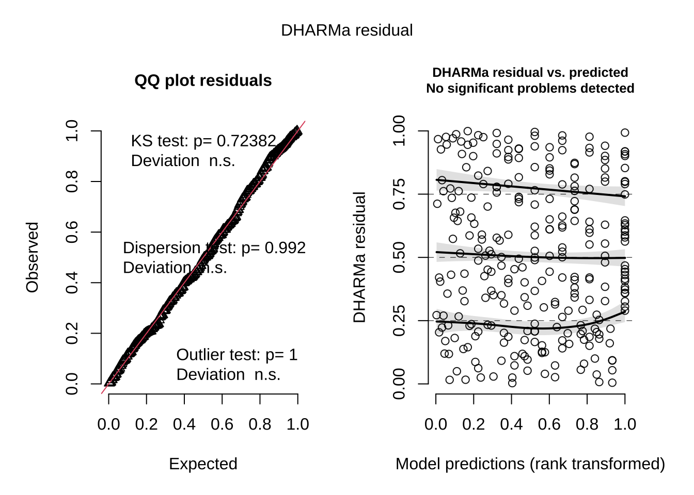
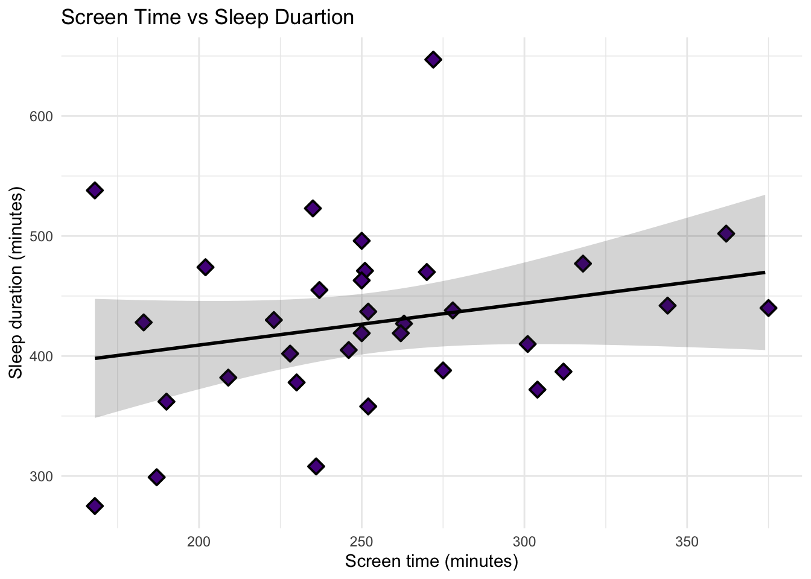

#read in packages here
library(tidyverse)
library(here)
library(showtext)
library(janitor)
library(dplyr)
library(readxl)
library(gtsummary)
library(flextable)
library(ggeffects)
library(readr)
library(MuMIn)
library(DHARMa)
#set up font
font_add_google("Roboto", "myfont")
showtext_auto()
#read in data here
kelp <- read_csv("../data/annual_kelp.csv")
mopl <- read_csv("../data/MOPL_nest.csv")
my_data <- read_csv("../data/mydata.csv")ENVS 193 DS Final
Set Up
Problem 1. Research writing
a.
In part one the researchers used a linear regression test to determine whether precipitation predicts flooded wetland area. This test can be used because the predictor variable, precipitation, is a continuous variable, and the response variable, flooded wetland area (m2), is also a continuous variable.
In the second part, they likely used a Kruskal-Wallis test to evaluate if median flooded wetland area differs across water year classifications. This test is used to compare medians across more than two groups, in this study the groups were wet, above normal, below normal, dry, or critical drought.
b.
A box plot could be used to visualize the test in part 2. This graph will have water year classification on the x-axis (wet, above normal, below normal, dry, and critical drought) and the y-axis will have the flooded wetland area (m2). There will be a different colored box plot for each water year classification and each plot will have a median line which will show the statistic being compared in a Kruskal-Wallis test. Additionally there will also be individual data points jittered on the graph to show the distribution of individual observations. The purpose of this graph is to visually allow readers to compare the median flooded wetland area across each of the categories for water year type.
c.
We found that precipitation doesn’t predict flooded wetland area (linear regression, F(df, df) = test-statistic(F), R2 = coefficient of determination, p = 0.11, ⍺ = significance level).
We found no difference (η2 = effect size) in median flooded wetland area (m2) across water year classification (wet, above normal, below normal, dry, critical drought) (Kruskal-Wallis test, 𝜒2(4)= test stat, p = 0.12, ⍺ = significance level).
d.
An additional variable that could influence the flooded area of a wetland is water management for wetlands. This is a binary categorical variable (managed vs un-managed). If management actions are taken, such as pumping water or using control gates, this can be turned into a factor variable of 1 and no water management actions in an areas can be represented as a 0. This variable might influence wetland flooding because by taking intentional actions to manage water, this could decrease the likelihood of flooded wetlands since the water will have been pumped elsewhere.
Problem 2. Data visualization
a.
kelp_clean <- kelp |> #create new object kelp_clean
clean_names() |> #clean up column names (all lowercase and underscores not spaces)
filter(site %in% c("IVEE", "NAPL", "CARP")) |> #selects only data from these 3 sites
filter(!(date == "2000-09-22" & transect == "6" & quad == "40")) |> #removes a specific observation (probably bad data or an error in collection)
mutate(site_name = case_when(
site == "NAPL" ~ "Naples",
site == "IVEE" ~ "Isla Vista",
site == "CARP" ~ "Carpinteria"
)) |> #creates a new column and changes site codes into names
mutate(site_name = as_factor(site_name),
site_name = fct_relevel(site_name,
"Naples", "Isla Vista", "Carpinteria")) |> #changes site_name to a factor and sets the order of site levels
group_by(site_name, year) |> #groups data by site and year for summary calculations
summarize(mean_fronds = mean(fronds)) |> #calculates the mean number of fronds for each site/year group
ungroup() #ungroups data so the data frame can be used normally after
slice_sample(kelp_clean, n = 5) #randomly displays 5 observations (rows) from the dataset # A tibble: 5 × 3
site_name year mean_fronds
<fct> <dbl> <dbl>
1 Isla Vista 2003 6.14
2 Carpinteria 2016 4.97
3 Carpinteria 2009 9.43
4 Naples 2004 7.81
5 Naples 2007 17.2 str(kelp_clean) #shows the structure of the data frame (variables, data types, and size)tibble [77 × 3] (S3: tbl_df/tbl/data.frame)
$ site_name : Factor w/ 3 levels "Naples","Isla Vista",..: 1 1 1 1 1 1 1 1 1 1 ...
$ year : num [1:77] 2000 2001 2002 2003 2004 ...
$ mean_fronds: num [1:77] 1.8947 0.0606 3.0111 9.2596 7.8141 ...b.
The certain code chunk is filtered out due to the missing datasheet, which is mentioned in the “Notes” column in the data, so there was no real frond count and this observation should be excluded from analysis. In transect 6, quad 40, the number for the value of fronds is -99999, this value represents a very large negative number that is unrealistic and meant to be used as an extreme placeholder value to show that there is missing data here and it can’t be a real biological measurement.
c.
ggplot(data = kelp_clean, #ggplot call with kelp_clean data frame
aes(x = year, #year to the x-axis
y = mean_fronds, #mean_fronds to y-axis
color = site_name)) + #colors each data by site_name
geom_point() + #adds points at each observation to graph
geom_line() + #connects data points with a line
scale_color_manual(values = c( #assigns colors to each site
"Naples" = "deeppink4",
"Isla Vista" = "slateblue4",
"Carpinteria" = "darkgreen")) +
labs(
title = "Sites vary in mean kelp fronds per year", #adds graph title
x = "Year", #makes x-axis title
y = "Mean kelp fronds per year", #makes y-axis title
color = "Site" #adds title to legened
) +
theme_minimal(base_family = "myfont") + #changes theme of graph with new font
theme(
plot.title = element_text(hjust = 0.5) #centers graph title
)
d.
Isla Vista is the site that shows the most variable mean kelp fronds per year due to having the highest values for mean kelp frond per year, indicated by the large spikes in values (~ 30-40), while also having large drops across years with very low values (~ 4-9). The spread of high mean kelp fronds to very low mean kelp fronds shows a large variation year-to-year.
Carpinteria shows the least variable mean kelp fronds per year with its data points on the graph all clustered together in a small range (~ 3-16). The line connecting data points for Carpinteria shows very small fluctuations and is relatively consistent showing a more stable mean kelp frond.
Problem 3. Data analysis
a.
The response variable is if the nesting site of a Mountain Plover is in use or available, the 1s mean the site is used, while the 0s means the nesting site is available.
b.
Visual obstruction:
- This predictor variable is a continuous variable, measured in cm. As visual obstruction increases, the probability of Mountain Plover nest sites would decrease, as noted in the Introduction section this because these birds prefer “short and sparse vegetation” to breed on.
Distance to prairie dog colony:
- This predictor variable is a continuous variable, measured as the distance (meters). As distance to a prairie dog colony increases, the probability of Mountain Plover nest site use would decrease because prairie dogs create ideal nesting habitats for Mountain Plovers through soil disturbance and vegetation clipping, which is also found in the Introduction section.
c.
| Model Number | Visual Obstruction | Distance to Prairie Dog Colony | Model Description |
|---|---|---|---|
| 1 | No predictors (null model) | ||
| 2 | X | X | Saturated model (both predictors) |
| 3 | X | Model with visual obstruction only | |
| 4 | X | Model with distance to prairie dog colony only |
d.
Then, write your code to run all your models. Do not display any output.
mopl_clean <- mopl |> #create new object with mopl data frame
clean_names() |> #clean standardized column names
mutate(used_bin = recode(id, #create response variable for nesting site use
"used" = 1, #site used is represented as 1
"available" = 0)) |> #site unused (available) is represented as 0
select(used_bin, edgedist, vo_nest) #keep only these variables
#| label: models
#null model estimating probability of site use with neither predictors
model1 <- glm(used_bin ~ 1,
data = mopl_clean,
family = "binomial")
#tests effect of visual obstruction on probability of nest site use
model2 <- glm(used_bin ~ vo_nest,
data = mopl_clean,
family = "binomial")
#tests effect of distance to prairie dog colony on site use
model3 <- glm(used_bin ~ edgedist,
data = mopl_clean,
family = "binomial")
#combines both effects of visual obstruction and distance to prairie dog colony on site use
model4 <- glm(used_bin ~ vo_nest + edgedist,
data = mopl_clean,
family = "binomial") e.
#compare regression models using Akaike Information Criterion
AICc(
model1,
model2,
model3,
model4
) |>
arrange(AICc) #ranks model from lowest to highest AICc value df AICc
model2 2 331.8130
model4 3 333.8293
model1 1 384.6318
model3 2 386.1351The best model as determined by having the lowest Akaike’s Information Criterion (AIC) value was the model predicting that Mountain Plover nest site was use as a function of visual obstruction.
f.
#creates simulated residuals and diagnostic plots to assess model fit
plot(
simulateResiduals(model2)
)
g.
#generate model2 predicted probabilites and confidence intervals
mod_preds <- ggpredict(model2, #create object to store predictions
terms = "vo_nest") #generate predictions
#base layer: ggplot
ggplot(data = mopl_clean, #start with mopl_clean dataframe
aes(x = vo_nest, #x is visual obstruction
y = used_bin)) + #y is nesting site use
geom_point(size = 3, #add data points
alpha = 0.4, #make points more transparent
color = "deeppink4") + #make data pink
geom_ribbon(data = mod_preds, #use mod_preds to add confidence interval
aes(x = x, #x is from prediction object
y = predicted, #y is predicted probabilities from model
ymin = conf.low, #lower bound of CI
ymax = conf.high), #upper bound of CI
alpha = 0.3, #make band transparent
fill = "lightblue") + #make band light blue
geom_line(data = mod_preds, #create line with mod_preds data
aes(x = x, #x values
y = predicted)) + #y is predicited probabilites
scale_y_continuous(limits = c(0, 1), #restrict y-axis probability range
breaks = c(0, 1)) + #show only 0 and 1 axis ticks
labs(
x = "Visual Obstruction at Nest Site (cm)", #x-axis label
y = "Probability of Mountain Plover Nest Site Use", #y-axis label
title = "Effect of Visual Obstruction on Mountain Plover Nest Site Use") + #add graph title
theme_classic() #remove gridlines
h.
Figure 1. Effect of visual obstruction on use of Mountain Plover nest site. This visualization shows the predicted probability of a Mountain Plover nest site in use as a function of visual obstruction at the nest time (cm). The magenta points represent individual observed data, 0 indicating unused sites and 1 indicating used sites. Due to the transparency of the points, areas of darker circles show more observations at that value. The solid line sloping downwards represents the predictions of a logistic regression model with visual obstruction as the only predictor and the light blue shaded band shows the 95% confidence interval. The visualization shows that the probability of Mountain Plover nest site use decreases as visual obstruction increases. Data source: Duchardt, Courtney; Beck, Jeffrey; Augustine, David (2020). Data from: Mountain Plover habitat selection and nest survival in relation to weather variability and spatial attributes of Black-tailed Prairie Dog disturbance [Dataset]. Dryad. https://doi.org/10.5061/dryad.ttdz08kt7
i.
ggpredict(model2, #generate predicted vaules from model2
terms = "vo_nest [0]") #calculate when visual obstruction is 0cm# Predicted probabilities of used_bin
vo_nest | Predicted | 95% CI
--------------------------------
0 | 0.73 | 0.65, 0.80j.
The predicted probability of nest site occupancy at 0 cm with no visual obstruction is 0.73 which shows there is a high probability of site use when vegetation is absent. Figure 1 has a negative sloping logistic regression line showing that as visual obstruction increases, the probability of nesting site use decreases. This relationship is found because Mountain Plovers prefer open nesting habitats with short, sparse vegetation since they are able to better visibly detect predators, oftentimes this type of environment is maintained by prairie dogs. The other predictor vairable, distance to prairie dog colony, was not included in the best-supported model from AICc test, meaning this variable has less affect on nesting site use than visual obstruction.
Problem 4. Affective and exploratory visualization
a.
In my Homework 2 exploratory visualization, my data is represented in a factual way that is easy to interpret due to the graph title, axis labels, and different colors for each day of the week, so viewers are able to read the histogram and get a summary of my data. Meanwhile in Homework 3 for my affective visualization, this is a much more abstract form of a visualization, so without my artist statement it would be hard to interpret. Also I created it from my real data but viewers wouldn’t be able to get specific data values from looking at it.
Between all my visualizations, I noticed a few outliers on my screen time vs sleep duration plot, but overall it appeared to be a weak negative relationship. As screen time increases, sleep duration tends to decrease slightly, but this pattern doesn’t seem to appear to be very strong. I also noticed that my screen time appears to have a similar range of values for each day while sleep duration varied a lot.
Like I stated earlier I noticed a pattern with my screen time duration being similar for each day while my sleep duartion varied a lot for each day. This potentially occurred because of my sleep duration or a different predictor variable not studied. In my exploratory visualization which was a box plot for day of the week vs sleep duration, I noticed Tuesdays on average tend to have the lowest sleep duration, while Monday and Wednesday on average have the most.
I received feedback on which colors of yarn to use for my crochet visualization. I took the advice of doing white to represent my sleep duration and found a fluffy type of yarn that reminded me of a blanket. Then for screen time I used a green because I thought the color was pretty, it would stand out, and found it in the same texture as the white one. I took the feedback of instead of using the same color but in two different shades to finding two completely different colors of yarn.
b.
Based on my predictor variable of daily screen time (minutes) and the response variable, sleep duration (minutes), I could conduct a linear regression analysis to determine the strength, direction, and significance between the two variables. I could figure out if higher amounts of screen time are related to shorter sleep duration since linear regression models the relationship between two variables and since both my predictor and response variable are continuous, measured in minutes, this test will work for quantitative data. Overall this analysis will let me assess if increased screen time will predict changes to sleep duration and allow me to quantify this relationship.
c.
Check assumptions
Before I fit a model:
Linear relationship between response and predictor variables
Yes, I would expect a linear relationship between my X variable, screen time (minutes), and my Y variable, sleep duration (minutes). As screen time increases I would expect sleep duration to decrease.
Independent error (no correlation between errors)
An error from one observation will not influence an error from another observation since both variables are their own observation and it is made daily.
After I fit my model:
- Homoscedasticity of residuals (constant variance)
- Normally distributed residuals
#clean data
my_data_clean <- my_data |>
clean_names()
#fit the regression model
model <- lm(sleep_duration_minutes ~ screen_time_minutes, data = my_data_clean)
# base R residuals
par(mfrow = c (2, 2))
plot(model)
summary(model)
Call:
lm(formula = sleep_duration_minutes ~ screen_time_minutes, data = my_data_clean)
Residuals:
Min 1Q Median 3Q Max
-123.001 -41.577 -7.537 36.463 212.807
Coefficients:
Estimate Std. Error t value Pr(>|t|)
(Intercept) 339.5369 63.1020 5.381 7.21e-06 ***
screen_time_minutes 0.3480 0.2436 1.429 0.163
---
Signif. codes: 0 '***' 0.001 '**' 0.01 '*' 0.05 '.' 0.1 ' ' 1
Residual standard error: 70.93 on 31 degrees of freedom
Multiple R-squared: 0.06177, Adjusted R-squared: 0.0315
F-statistic: 2.041 on 1 and 31 DF, p-value: 0.1631Residuals vs Fitted: This plot checks if there is a linear relationship between the predictor variable, screen time, and the response variable, sleep duration. The residuals appear to be scattered somewhat evenly and randomly around the horizontal line without a strong curved pattern, although there is a slight trend in the red line showing small deviations. Overall the linearity assumption is reasonably satisfied.
QQ Residuals: This plot checks whether the residuals follow a normal distribution. Since most of the data points fall along the reference line, with the exception of a few, this indicates that the residuals are normally distributed.
Scale-Location: This plot checks the assumption of homoscedasticity as well but with the square root of the standardized residuals. The points appear to be relatively evenly spread across the fitted values, suggesting that the variance of residuals is mostly constant so the homoscedasticity assumption is met.
Residuals vs Leverage: This plot identifies any potential outliers that could affect the regression model using Cook’s distance. While some observations appear to be higher than others, none appear to have extremely high influence on the model since they fall within the dashed lines, concluding there are no outliers.
Analysis
To assess the relationship between screen time (minutes), the predictor variable, and sleep duration (minutes), the response variable, I conducted a simple linear regression analysis. The regression results showed that the estimated intercept is 339.54, which is the predicted sleep duration when screen time is 0. The slope coefficient for screen time is 0.348, meaning that for every increase in 1 minutes of screen time, the predicted sleep duration increases by approximately 0.35 minutes on average. Although the p-value for screen time coefficient is 0.163, which is greater than the significance level of 0.05, indicating a relationship that is not statistically significant, so we can’t conclude that screen time is a meaningful predictor of sleep duration in this data. Additionally, the F-statistic is 2.04 (p = 0.163) which indicates that the overall model is not statistically significant. For overall effect size, the R2 value is 0.0618 meaning that only 6.18% of the variability in sleep duration is explained by screen time, this is a small effect size. Lastly, the large residual standard error of 70.93 minutes show there is a large variability in sleep duration that is not explained by the model.
d.
data_pred <- ggpredict( #use ggpredict() to generate predicted valued
model, #use model from lm()
terms = "screen_time_minutes" #values of screen_time_minutes
)
#print out results
data_pred# Predicted values of sleep_duration_minutes
screen_time_minutes | Predicted | 95% CI
------------------------------------------------
168 | 398.00 | 348.39, 447.61
194 | 407.05 | 368.01, 446.08
220 | 416.10 | 385.77, 446.43
246 | 425.14 | 399.65, 450.64
270 | 433.50 | 407.09, 459.90
296 | 442.54 | 409.85, 475.24
322 | 451.59 | 409.47, 493.72
374 | 469.69 | 404.98, 534.39#create regression table from model
tbl_regression (model, #model object from lm()
intercept = TRUE, #include the intercept term in table
label = list(`(Intercept)` = "Intercept", #rename row
`screen_time_minutes` = "Screen Time")) |> #rename row
as_flex_table() #display tableCharacteristic | Beta | 95% CI | p-value |
|---|---|---|---|
Intercept | 340 | 211, 468 | <0.001 |
Screen Time | 0.35 | -0.15, 0.84 | 0.2 |
Abbreviation: CI = Confidence Interval | |||
ggplot(data = my_data_clean, #ggplot with my_data_clean dataframe
aes(x = screen_time_minutes, #screen time on x-axis
y = sleep_duration_minutes)) + #sleep duration on y-axis
geom_point(size = 3, #size of points
stroke = 1, #width of point border
fill = "purple4", #make points purple
shape = 23) + #make points diamonds
geom_ribbon(data = data_pred, #shaded CI ribbion from predictions
aes(x = x, #predictor value
y = predicted, #predicted outcome
ymin = conf.low, #lower bound of CI
ymax = conf.high), #upper bound of CI
alpha = 0.2) + #transparency of ribbon
geom_line(data = data_pred, #line for predicted values
aes(x = x, #predictor value
y = predicted), #predicted outcome
linewidth = 1) + #line thickness
labs(x = "Screen time (minutes)", #add x-axis label
y = "Sleep duration (minutes)", #add y-axis label
title = "Screen Time vs Sleep Duartion") + #add graph title
theme_minimal() #change theme
e.
Figure 2. Screen time was positively associated with sleep duration. The purple diamonds represent individual data points for each day from 01/26/2026 to 03/11/2026. The predictor variable, screen time which is measured in minutes, is recorded on the x-axis while the response variable, sleep duration which is also measured in minutes, is reflected on the y-axis. The gray shaded band represents the 95% confidence interval around the model predictions. As the number of minutes of screen time increased, the predicted sleep duration also increased based on the fitted linear regression model. The black regression line is slightly sloping upwards, indicating that the higher my daily screen time was, the slightly longer the sleep duration, on average. Although there is quite a bit of variation around the model predictions.
f.
Sleep duration (minutes) showed a slight positive relationship with screen time (minutes). Although screen time was not a statistically significant predictor of sleep duration, as screen time increased so did sleep duration (linear regression, F(1, 31) = 2.04, R2 = 0.062, p = 0.163, \(\alpha\) = 0.05). Based on model predictions, for each additional 1 minute increase in screen time, sleep duration increased by 0.35 minutes (β = 0.348 ± 0.244 SE). On average, screen time only explained 6.2% of the variation in sleep duration which is a small effect size.